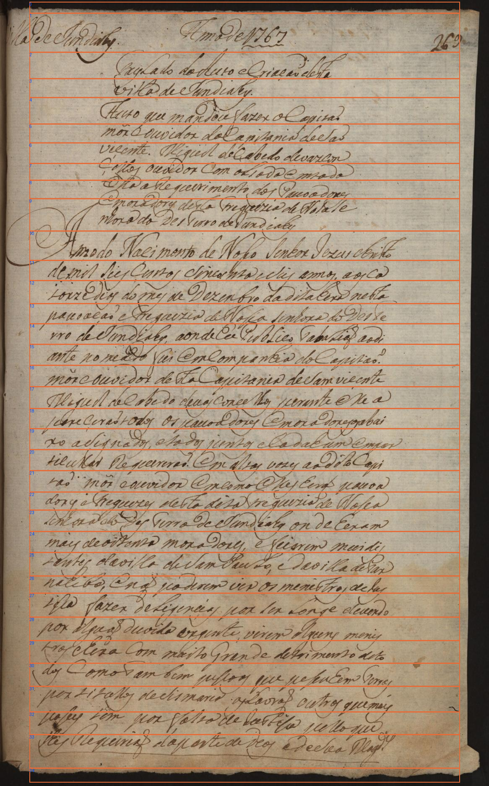

PP-OCRv6 medium/Kraken · edição publicada · 22/10/2026
Diagnóstico de desenvolvimento. Segmentação automática na imagem inteira; 35 recortes; 36 unidades editoriais; zero falhas técnicas e três saídas vazias. Referência assistida pela edição, sem nova conferência humana, treinamento ou avaliação reservada. As revisões anteriores permanecem intactas.
| Área | CER | WER |
|---|---|---|
| Página completa | 26,97% | 60,31% |
| Cabeçalho e foliação | 35,29% | 71,43% |
| Título | 47,06% | 88,89% |
| Resumo | 79,25% | 90,70% |
| Corpo | 14,63% | 52,22% |
Taxa principal sobre uma única sequência do reto: 391/1.450 operações em caracteres e 158/262 em palavras. As áreas são diagnósticas, sem média de taxas. Caixa, grafia, acentos, pontuação e expansões editoriais foram preservados.
O resumo teve a maior perda de conteúdo. O detector juntou duas linhas, e a primeira retornou vazia. A atribuição de cada erro à segmentação ou ao reconhecedor não foi isolada. O alvo Magestade segue a edição, enquanto a revisão anterior conserva Magᵈᵉ. Este resultado não é diretamente comparável à medição anterior com recortes humanos.
Relatório completo e limites · Texto bruto · Texto oficial · CSV · Auditoria
Villa de Jundiahy Anno de 1767 269
De Jundiarly node 1767 269
Traslado de Auto e Criação desta villa de Jundiahy.
Tdo u Cacõ desa Uilla de Iandialy
Auto que mandou fazer o Capitão mõr e ouvidor da Capitania de São viçente. Miguel de Cabedo de vazcon çellos ouvidor Com o liado em toda ella o requerimento dos Povoadores E moradores desta Freguezia de Nossa Se nhora do DesTerro de Jundiahy
a ti e icnedeae o o o i la a Rqueiment os P De duia de
Anno do Nacimento de Nosso Senhor Jezus christo de mil seis centos sincoenta e seis annos, aos ca torze dias do mes de Dezembro da dita Hera nesta povoação e Freguezia de Nossa senhora do Deste rro de Jundiahy, aonde Eu Publico Tabelião ao di ante nomeado fui Em Companhia do Capitão mõr e ouvidor desta Capitania de Sam viçente Miguel de Cabedo de vasconçellos perante elle a pareçerão todos os povoadores E moradores os abai xo assignados, e todos juntos e Cada Hum Em par ticular Requererão Em altas vozes ao dito Capi tão mõr e ouvidor Em como elles Herão povoa dores e Freguezes desta dita Freguezia de Nossa Senhora do DesTerro de Jundiahy onde Heram mais de oitenta moradores, e ficaram mui dis tantes da villa de Sam Paulo, e da villa de Par nahiba, e não poderem vir os ministros de Jus tissa fazer deligençias por ser Longe devendo por alguã duvida orgente, virem alguns menis tros e Hera com muito Grande detrimento de to dos como Tambem pessoas que pessuhem Terras por titullos de Sismaria as Lavrão outros que mais posses tem por falta de Justissa pello que lhes Requerião da parte de Deos e de Sua Magestade
Annodo Nacimento de Nosso Senhor Iezuschritto de mil siis centos sincoenta e sus annos, aos ca iorze dios do mes de Dezenbro da dizalira nesta pauoaçaõ eTreguezia de Nossa sinhora do Deste rro de Iundiahy, aonde Eu Peoblico TabaLiaõ ao di ante nomeado fui em companhia do Capitaõ mor e ouvidor desta Capitania de samvicente Miguel de Cabe do deuos conçelhos perante elea jeereçeraõ todos os pauoa dores mora do resosabai ro asignados, e todos juntos e ladahum empor ticullar Requereraõ? em altas vozes ao dito Capi taõ moi e ouvidor Emcomo elles Eera pouoa dore e Freguezes desta diza treguezia de Nossa senhora dlo des Terro de Sundialg on de heram mais de oitenta mona dores, e feiarem meidis tantes da villa de Sam PauLo, e da villa de Par nacibo, e naõ poderem vir os menistro, delas isca fazer de Ligencias por ser Longe deuendo por alguaõ devida ergente, virem Rgcns menis tros chera Com maito Grande detrimento dito dos Comosambem pessoos que pe seuhem Terras porLitallos de Sismaria os Lavraõ outros que mais l se som po falra de dastisa pello que lhes Requiriaõ da parte de deos e de sua Ragd.s
Ordens iniciadas em zero. As faixas de borda foram mantidas, assim como o recorte vazio do resumo.

| Ordem | Caixa | Texto emitido |
|---|---|---|
| 0 | [70, 4, 1096, 31] | |
| 1 | [70, 31, 1096, 124] | De Jundiarly node 1767 269 |
| 2 | [70, 124, 1096, 187] | Tdo u Cacõ desa |
| 3 | [70, 187, 1096, 232] | Uilla de Iandialy |
| 4 | [70, 232, 1096, 295] | |
| 5 | [70, 295, 1096, 340] | a ti e |
| 6 | [70, 340, 1096, 389] | icnedeae |
| 7 | [70, 389, 1096, 429] | o o o i |
| 8 | [70, 429, 1096, 473] | la a Rqueiment os P |
| 9 | [70, 473, 1096, 550] | De duia de |
| 10 | [70, 550, 1096, 620] | Annodo Nacimento de Nosso Senhor Iezuschritto |
| 11 | [70, 620, 1096, 668] | de mil siis centos sincoenta e sus annos, aos ca |
| 12 | [70, 668, 1096, 723] | iorze dios do mes de Dezenbro da dizalira nesta |
| 13 | [70, 723, 1096, 771] | pauoaçaõ eTreguezia de Nossa sinhora do Deste |
| 14 | [70, 771, 1096, 820] | rro de Iundiahy, aonde Eu Peoblico TabaLiaõ ao di |
| 15 | [70, 820, 1096, 870] | ante nomeado fui em companhia do Capitaõ |
| 16 | [70, 870, 1096, 921] | mor e ouvidor desta Capitania de samvicente |
| 17 | [70, 921, 1096, 973] | Miguel de Cabe do deuos conçelhos perante elea |
| 18 | [70, 973, 1096, 1021] | jeereçeraõ todos os pauoa dores mora do resosabai |
| 19 | [70, 1021, 1096, 1071] | ro asignados, e todos juntos e ladahum empor |
| 20 | [70, 1071, 1096, 1121] | ticullar Requereraõ? em altas vozes ao dito Capi |
| 21 | [70, 1121, 1096, 1172] | taõ moi e ouvidor Emcomo elles Eera pouoa |
| 22 | [70, 1172, 1096, 1215] | dore e Freguezes desta diza treguezia de Nossa |
| 23 | [70, 1215, 1096, 1266] | senhora dlo des Terro de Sundialg on de heram |
| 24 | [70, 1266, 1096, 1316] | mais de oitenta mona dores, e feiarem meidis |
| 25 | [70, 1316, 1096, 1372] | tantes da villa de Sam PauLo, e da villa de Par |
| 26 | [70, 1372, 1096, 1413] | nacibo, e naõ poderem vir os menistro, delas |
| 27 | [70, 1413, 1096, 1470] | isca fazer de Ligencias por ser Longe deuendo |
| 28 | [70, 1470, 1096, 1526] | por alguaõ devida ergente, virem Rgcns menis |
| 29 | [70, 1526, 1096, 1580] | tros chera Com maito Grande detrimento dito |
| 30 | [70, 1580, 1096, 1635] | dos Comosambem pessoos que pe seuhem Terras |
| 31 | [70, 1635, 1096, 1696] | porLitallos de Sismaria os Lavraõ outros que mais |
| 32 | [70, 1696, 1096, 1750] | l se som po falra de dastisa pello que |
| 33 | [70, 1750, 1096, 1830] | lhes Requiriaõ da parte de deos e de sua Ragd.s |
| 34 | [70, 1830, 1096, 1864] |